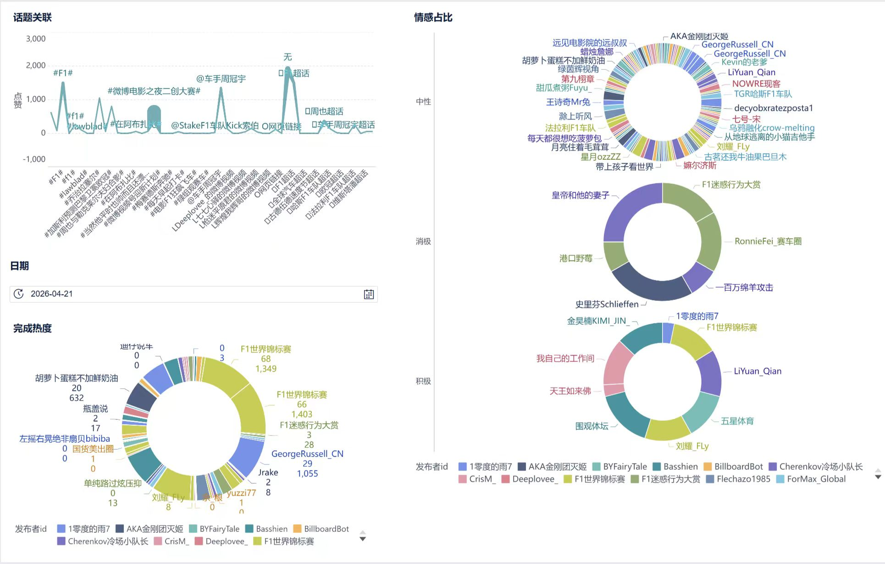

数据来源：微博平台 | 分析工具：八爪鱼RPA、Excel、FineBI 7.0 | 数据周期：2026年5月26日-5月31日
本项目以F1一级方程式赛车赛事为研究对象，通过八爪鱼RPA采集微博平台F1相关用户言论数据，完成数据清洗、AI文本标注、多维度可视化分析，挖掘赛事传播热度、用户地域分布、舆论情感倾向、热门讨论话题四大核心信息，总结F1赛事线上传播规律与用户舆论特征。
项目整体执行流程：原始数据采集 → Excel数据清洗与AI文本标注 → FineBI交互式可视化分析仪表板搭建 → 项目成果网页展示。
| 指标 | 总数值 | 单条最高值 |
|---|---|---|
| 点赞量 | 12000+ 次 | 1349 次 |
| 评论量 | 1500+ 条 | 407 条 |
| 转发量 | 2000+ 次 | 347 次 |
| 总互动量 | 15500+ 次 | 1396 次 |
| 情感类型 | 数量 | 占比 |
|---|---|---|
| 中性 | 125 条 | 78% |
| 积极 | 25 条 | 16% |
| 消极 | 10 条 | 6% |
本项目基于清洗完成的数据集制作交互式仪表板，包含传播热度趋势图、情感占比环形图、话题关键词词频图、高互动用户排行四大可视化组件，配置时间、情感、发布领域多维度筛选器，图表数据联动，可自由筛选查看细分舆情数据。

洞察1 传播时效性特征：F1舆情呈现极强的赛事时效性，比赛当日及赛后1天为热度峰值，休赛期讨论量明显下滑，流量高度依附赛事赛程；车手生日、冠军纪录等特殊节点也会引发短期热度高峰。
洞察2 用户发布渠道特征：近一半帖子来自iPhone、安卓等手机客户端，说明F1话题在移动端讨论活跃度极高；微博网页版、F1超话为第二大发布渠道，官方赛事标签与车手个人标签并重。
洞察3 整体舆论风向特征：全网舆情以中性、正面评价为主，占比超94%；积极内容集中在车手生日祝福、精彩超车/夺冠瞬间，消极内容仅占6%，主要针对赛事规则限制、车队内斗/故障、个人情绪宣泄。
洞察4 高互动内容特征：官方账号（F1世界锦标赛、车队官博）及影视跨界内容（F1电影）获得极高互动；车手日常花絮（拉塞尔、周冠宇）、跨界联动话题（比亚迪、欧冠）也较受欢迎，视频内容互动优势远高于纯文字。
洞察5 内容垂直度特征：约40%的帖子被标注为“其他”分类，说明大量用户生成内容（UGC）偏个人化、泛话题，内容垂直度待加强，可通过有奖话题挑战引导更聚焦的赛事相关讨论。
班级：医技5班
小组名称：沈懿阳组
项目分工：数据采集岗：陈子墨、Excel数据处理岗：黄华胤、FineBI可视化分析岗：吴文锦、网页制作与成果汇总岗：沈懿阳、汇报：王张涵